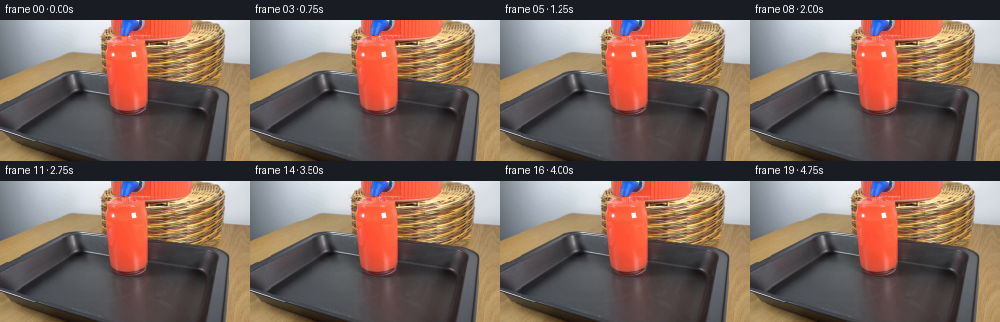
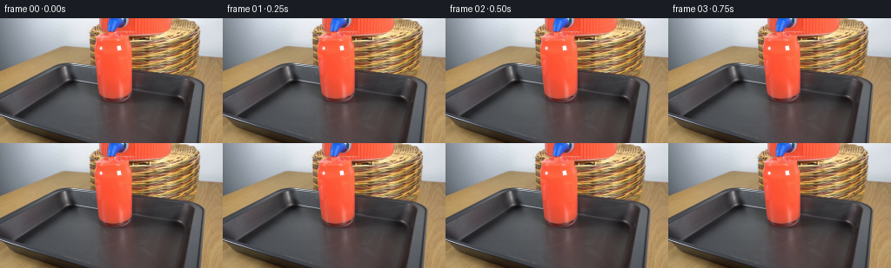

CODING AGENTS AS PIXEL WORLD MODELS
traex/GPT-6.1-Sol · 0090
点击播放 · 原生 RGB 像素
逐轮保存的候选
回放视频、检查图与代码变化。
每份候选均可单独播放。实际图片检查记录在下方工具轨迹中。
候选 01播放与检查图
点击播放 · 原生 RGB 像素


展开代码变化
--- 上一保存版本
+++ 本次保存版本
@@ -0,0 +1,146 @@
+from pathlib import Path
+
+import numpy as np
+from PIL import Image
+
+import artifact_io
+
+
+HERE = Path(__file__).resolve().parent
+
+
+def smooth(a, b, x):
+ v = np.clip((x - a) / (b - a), 0.0, 1.0)
+ return v * v * (3.0 - 2.0 * v)
+
+
+def generate():
+ original = np.asarray(Image.open(HERE / "first_frame.png").convert("RGB"))
+ frames = [original.copy()]
+ # The camera, tap, glass, and tray are stationary. Work at subpixel
+ # resolution only in the small region containing the outlet and meniscus.
+ scale = 6
+ x0, y0, x1, y1 = 105, 12, 156, 49
+ crop = original[y0:y1, x0:x1]
+ source = np.asarray(
+ Image.fromarray(crop).resize(
+ ((x1 - x0) * scale, (y1 - y0) * scale),
+ Image.Resampling.BICUBIC,
+ ), dtype=np.float64,
+ )
+ yy, xx = np.mgrid[0:source.shape[0], 0:source.shape[1]]
+ x = x0 + (xx + 0.5) / scale - 0.5
+ y = y0 + (yy + 0.5) / scale - 0.5
+ red_glass = (
+ smooth(1.25, 1.7, source[..., 0] / np.maximum(source[..., 1], 1))
+ * smooth(145, 205, source[..., 0])
+ )
+ interior = smooth(110.1, 112.8, x) * (1 - smooth(146.7, 148.9, x))
+ interior *= red_glass
+
+ for i in range(1, 20):
+ t = i / 4.0
+ startup = smooth(0.0, 0.7, t)
+ image = source.copy()
+ coverage = np.zeros(x.shape)
+
+ def paint(color, alpha):
+ nonlocal image, coverage
+ alpha = np.clip(alpha, 0, 1)
+ image = image * (1 - alpha[..., None]) + np.asarray(color) * alpha[..., None]
+ coverage = 1 - (1 - coverage) * (1 - alpha)
+
+ # A slow continuous pour into an already nearly full glass. The level
+ # moves by less than two pixels, without spilling over the lip.
+ level = 23.0 - 1.5 * t / 4.75
+ center = 130.2
+ rx, ry = 18.05, 3.1
+ dx = (x - center) / rx
+ dy = (y - level) / ry
+ radius = np.sqrt(dx * dx + dy * dy)
+ surface = (1 - smooth(0.94, 1.03, radius)) * interior * startup
+
+ # Retain the original photographed color and glass reflections; only
+ # the liquid surface changes, with a shallow perspective ellipse.
+ illumination = 5.5 * (1 - dy) + 2.5 * np.cos(dx * 3)
+ surface_color = np.empty_like(source)
+ surface_color[..., 0] = 250.0 + 1.2 * np.cos(dx * 2)
+ surface_color[..., 1] = 109.0 + illumination
+ surface_color[..., 2] = 85.0 + illumination * 0.9
+ paint(surface_color, surface * 0.22)
+
+ # The local impact dimple and traveling capillary waves are fixed to
+ # the incoming jet, rather than translating the glass or its highlights.
+ impact_x = 130.05 + 0.12 * np.sin(6.1 * t)
+ impact_y = level - 0.1
+ rr = np.sqrt((x - impact_x) ** 2 + ((y - impact_y) * 5.3) ** 2)
+ angle = np.arctan2((y - impact_y) * 5.3, x - impact_x)
+ wave_r = rr + 0.2 * np.sin(angle * 3 + t * 4.3)
+ phase = wave_r * 1.05 - t * 7.1
+ crest = np.exp(-((np.sin(phase) / 0.24) ** 2))
+ fade = np.exp(-rr / 11) * smooth(1.5, 3.0, rr)
+ glint = (0.5 + 0.5 * np.sin(angle + 0.65)) ** 2
+ paint([255, 181, 155], crest * fade * glint * surface * 0.38)
+ trough = np.exp(-((np.sin(phase - 0.43) / 0.31) ** 2))
+ paint([206, 72, 54], trough * fade * surface * 0.13)
+ dimple = np.exp(-((x - impact_x) / 1.18) ** 2 - ((y - impact_y) / 0.45) ** 2)
+ paint([188, 61, 42], dimple * surface * 0.46)
+
+ # Subtle curved meniscus where the liquid meets the inner glass wall.
+ edge = np.exp(-((radius - 0.98) / 0.035) ** 2)
+ paint([252, 173, 149], edge * interior * startup * 0.16 * smooth(-0.4, 0.65, dy))
+
+ # Laminar, slightly tapering red jet from the underside of the blue
+ # spigot. Its fine traveling highlights are not a rigid moving object.
+ outlet_y = 14.9
+ length = impact_y - outlet_y
+ q = np.clip((y - outlet_y) / length, 0, 1)
+ jet_x = 130.0 + 0.13 * q + 0.13 * q * np.sin(4.8 * t - q * 3.2)
+ half_width = (1.15 - 0.31 * q) * (1 + 0.055 * np.sin(y * 2.3 - t * 16))
+ jet_r = (x - jet_x) / half_width
+ jet_alpha = (1 - smooth(0.73, 1.10, np.abs(jet_r)))
+ jet_alpha *= smooth(outlet_y - 0.15, outlet_y + 0.35, y)
+ jet_alpha *= 1 - smooth(impact_y - 0.12, impact_y + 0.48, y)
+ jet_alpha *= startup
+ jet_color = np.empty_like(source)
+ edge_shade = np.clip(np.abs(jet_r), 0, 1)
+ jet_color[..., 0] = 251 - 54 * edge_shade ** 2
+ jet_color[..., 1] = 110 - 46 * edge_shade ** 1.5
+ jet_color[..., 2] = 80 - 36 * edge_shade ** 1.5
+ paint(jet_color, jet_alpha * 0.84)
+ highlight = np.exp(-((jet_r + 0.27 + 0.035 * np.sin(y * 2 - t * 19)) / 0.19) ** 2)
+ pulse = 0.55 + 0.45 * np.sin(y * 3.7 - t * 22.0) ** 2
+ paint([255, 204, 180], highlight * pulse * jet_alpha * 0.42)
+
+ # Very small entrained bubbles at the contact point. Their brief lives
+ # and outward movement give the liquid a physical, continuously flowing
+ # appearance without large splashes or an added object.
+ for j in range(5):
+ age = (t + j * 0.181) % 0.92
+ theta = j * 2.399 + 0.33 * np.sin(j * 3.0)
+ bx = impact_x + np.cos(theta) * (0.75 + age * 4.4)
+ by = impact_y + np.sin(theta) * (0.25 + age * 0.9)
+ bubble_r = 0.23 + 0.10 * np.sin(j * 1.6) ** 2
+ bubble = np.exp(-(((x - bx) / bubble_r) ** 2 + ((y - by) / (bubble_r * 0.72)) ** 2))
+ life = smooth(0.0, 0.11, age) * (1 - smooth(0.52, 0.91, age))
+ paint([255, 212, 190], bubble * life * surface * 0.48)
+
+ # The falling liquid induces extremely faint moving refractive shading
+ # beneath the surface. The white highlights on the glass stay intact.
+ band = np.exp(-((y - (level + 5.2)) / 5.4) ** 2)
+ caustic = np.sin((x - center) * 0.34 + (y - level) * 0.65 - 5.5 * t)
+ amount = band * interior * startup * 0.017 * (1 - surface)
+ paint(np.clip(source + caustic[..., None] * np.array([9., 15., 13.]), 0, 255), amount)
+
+ # Downsample the actual edit, not the photograph. Unedited areas remain
+ # byte-identical, with no resize softness or camera motion.
+ delta = image - source
+ delta = delta.reshape(y1 - y0, scale, x1 - x0, scale, 3).mean((1, 3))
+ frame = original.copy()
+ frame[y0:y1, x0:x1] = np.clip(crop.astype(float) + delta, 0, 255).round().astype(np.uint8)
+ frames.append(frame)
+ return np.stack(frames)
+
+
+if __name__ == "__main__":
+ artifact_io.save(generate(), HERE)
可观测工具轨迹
实际执行的命令与返回图片。
命令 1exit 0
/bin/bash -lc 'ls -la && cat prompt.txt && cat GENERATION_RULES.md'
命令 2exit 0
/bin/bash -lc "cat artifact_io.py && python - <<'PY'
from PIL import Image
import numpy as np
im=np.array(Image.open('first_frame.png').convert('RGB'))
print(im.shape)
# print hue downsample 4 pixel , code red R, dark d, bright ., grey g, beige b, blue B
for y in range(0,144,3):
s=''
for x in range(0,256,4):
r,g,b=im[y:y+3,x:x+4].mean((0,1))
if r>1.45*g and r>1.5*b and r>70: c='R' if r>150 else 'r'
elif max(r,g,b)<55: c='#'
elif max(r,g,b)<100:c='d'
elif min(r,g,b)>220:c='.'
elif max(r,g,b)-min(r,g,b)<18:c='g'
elif b>r*1.2:c='B'
elif r>b*1.15:c='b'
else: c='-'
s+=c
print(f'{y:03}',s)
PY"命令 3exit 0
/bin/bash -lc "python - <<'PY'
from PIL import Image
import numpy as np
im=np.array(Image.open('first_frame.png'))
# reds every pixel row intervals
for y in range(0,100,2):
mask=(im[y,:,0]>1.5*im[y,:,1])&(im[y,:,0]>1.55*im[y,:,2])&(im[y,:,0]>90)
ids=np.flatnonzero(mask); runs=np.split(ids,np.where(np.diff(ids)>1)[0]+1)
print(y,[(int(i[0]),int(i[-1])) for i in runs if len(i)>1])
print('FULL ASCII:')
# each cell 2 x 2, edge/brightness, red render intensity
for y in range(0,106,2):
s=''
for x in range(0,256,2):
r,g,b=im[y:y+2,x:x+2,:3].mean((0,1)); lum=.21*r+.72*g+.07*b
if r>1.5*g and r>1.5*b and r>70: c='R' if r>175 else ('r' if r>125 else 'v')
elif r>1.25*g and r>1.3*b and r>70: c='o'
else:c=' .,:;"'!i1tfLCG08@'"'[min(14,int((255-lum)/256*15))]
s+=c
print(f'{y:03} {s}')
PY"命令 4exit 0
/bin/bash -lc "python - <<'PY'
from PIL import Image
import numpy as np
im=np.array(Image.open('first_frame.png').convert('RGB'))
chars=' .,:;ox%#@'
for name,(x0,y0,x1,y1) in {'left':(46,44,112,102),'red':(101,0,164,100),'right':(151,0,232,83)}.items():
a=im[y0:y1,x0:x1]
print('\\n',name, 'LUMINANCE')
for j,row in enumerate(a):
s=''.join(chars[min(9,int((255-(.21*r+.72*g+.07*b))*10/256))] for r,g,b in row)
print(f'{j+y0:03} {s}')
print('\\nRGB rows at x=100 through 159, step2')
for y in [0,10,20,28,32,34,38,48,60,70,78,86,94]:
print(y,[tuple(map(int,p)) for p in im[y,100:160:2]])
PY"命令 5exit 0
/bin/bash -lc "python - <<'PY'
from PIL import Image
import numpy as np
im=np.array(Image.open('first_frame.png')).astype(float)
for y in range(0,100):
s=''
for x in range(100,228):
r,g,b=im[y,x,:3]
if b>r*1.15 and b>g*1.13: c='B' if b>160 else 'b'
elif r>1.6*g and r>1.7*b and r>140:c='R'
elif r>1.35*g and r>1.45*b and r>100:c='r'
elif r>1.17*g and r>b*1.3:c='w' if r>180 else 't'
elif min(r,g,b)>220:c=' '
elif min(r,g,b)>165:c='.'
elif max(r,g,b)<60:c='#'
elif max(r,g,b)<100:c='d'
else:c='o'
s+=c
print(f'{y:03} {s}')
PY"命令 6exit 0
/bin/bash -lc "python - <<'PY'
from PIL import Image
import numpy as np
im=np.array(Image.open('first_frame.png'))
chars=' .,:;ox%#@'
for y in range(82,144):
s=''
for r,g,b in im[y,100:174,:3]:
L=.21*r+.72*g+.07*b
if r>1.4*g and r>1.5*b and r>100:c='R'
elif max(r,g,b)-min(r,g,b)>30 and r>g and r>b:c='t'
else:c=chars[min(9,int((255-L)*10/256))]
s+=c
print(f'{y:03} {s}')
PY"命令 7exit 0
/bin/bash -lc "python - <<'PY'
from PIL import Image
import numpy as np
im=np.array(Image.open('first_frame.png')).astype(float)
print('Foreground RGB numerical every 2px columns x108-162:')
for y in range(94,142,2):
print(y, ' '.join('/'.join(str(int(t)) for t in p) for p in im[y,108:162:2,:3]))
print('\\nGreys foreground (1px):')
chars=' .,:;ox%#@'
for y in range(92,144):
s=''.join(chars[min(9,int((255-(.21*r+.72*g+.07*b))*10/256))] for r,g,b in im[y,110:170,:3])
print(f'{y:03} {s}')
PY"命令 8exit 0
/bin/bash -lc "python - <<'PY'
import numpy as np
from PIL import Image,ImageFilter
im=Image.open('first_frame.png').convert('RGB'); a=np.array(im).astype(float); blur=np.array(im.filter(ImageFilter.GaussianBlur(2))).astype(float); d=(a-blur).mean(-1)
print('Highlights/ edges top')
for y in range(0,144,2):
s=''
for x in range(0,256,2):
v=d[y:y+2,x:x+2].mean(); c=' ' if abs(v)<2 else ('+' if v>8 else ('.' if v>2 else ('#' if v<-8 else '-')))
s+=c
print(f'{y:03} {s}')
PY"命令 9exit 0
/bin/bash -lc "python - <<'PY'
from PIL import Image
import numpy as np
im=np.array(Image.open('first_frame.png')).astype(float)
# detailed entire gray lower foreground classify faint redness; objects contours look
for y in range(80,144):
s=''
for x in range(60,204):
r,g,b=im[y,x,:3]; v=(r-g)
if r>1.4*g and r>110: c='R'
elif v>26: c='r'
elif v>16:c='t'
elif v>8:c='~'
elif max(r,g,b)<52:c='#'
elif max(r,g,b)<72:c='d'
elif max(r,g,b)<85:c='o'
elif max(r,g,b)<105:c='.'
else:c='+'
s+=c
print(f'{y:03} {s}')
PY"命令 10exit 0
/bin/bash -lc "python - <<'PY'
import numpy as np
from PIL import Image
im=np.array(Image.open('first_frame.png')).astype(float)
print('rim crop RGB values x104:166 y14-26')
for y in range(14,27):
print(y,','.join('%d:%d/%d/%d'%(x,*im[y,x]) for x in range(104,166,3)))
print('cup bottom coordinates')
for y in range(84,100):
mask=(im[y,:,0]>150)&(im[y,:,0]>1.4*im[y,:,1])&(im[y,:,0]>1.5*im[y,:,2])
print(y,np.flatnonzero(mask).tolist())
PY"命令 11exit 0
/bin/bash -lc "python - <<'PY' import importlib.util for m in ['numpy','PIL','scipy','cv2']: print(m, bool(importlib.util.find_spec(m))) PY"
命令 12exit 0
/bin/bash -lc "python generate.py && python - <<'PY'
import numpy as np
from PIL import Image
p=np.load('pixels.npz')['pixels']; a=np.asarray(Image.open('first_frame.png').convert('RGB')); b=np.stack([(p>>16)&255,(p>>8)&255,p&255],-1).astype(np.uint8).transpose(2,0,1,3)
assert b.shape==(20,144,256,3)
assert np.array_equal(a,b[0])
print('shape', b.shape, 'first exact', np.array_equal(a,b[0]))
for i in [1,4,10,19]:
d=np.abs(b[i].astype(int)-a.astype(int));print(i,'changed',np.count_nonzero(d.max(-1)), 'max', d.max(),'sum',d.sum(),'next sum',np.abs(b[i].astype(int)-b[i-1].astype(int)).sum())
# numeric top region delta map
for y in range(13,29):
line=''
for x in range(109,152):
d=(b[19,y,x].astype(float)-a[y,x]).mean()
line+= ' ' if abs(d)<1 else ('+' if d>8 else ('.' if d>0 else ('#' if d<-8 else '-')))
print(y,line)
PY"保存候选 1 份；完成命令 12 次；可验证图片返回 0 张。原始 API 响应与完整日志保留在本地。